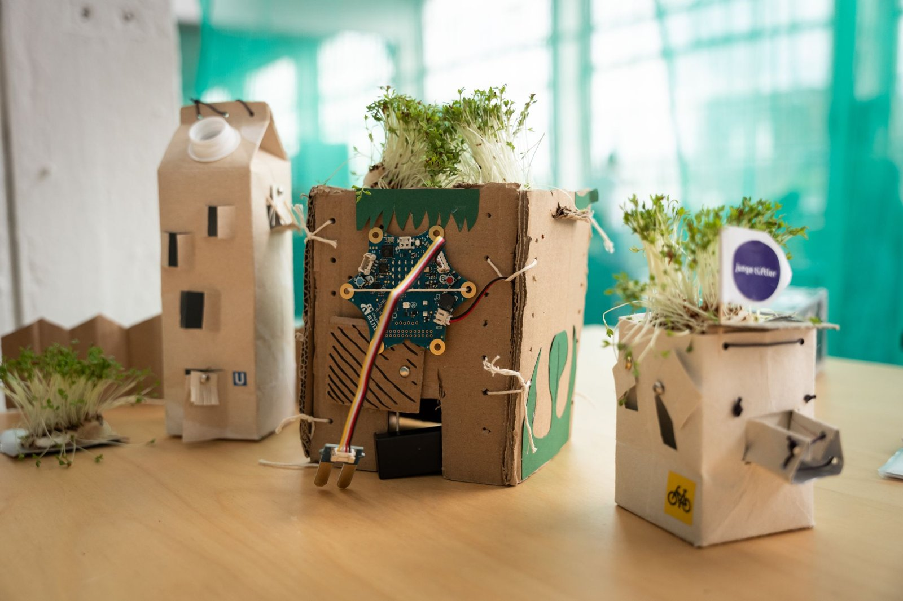
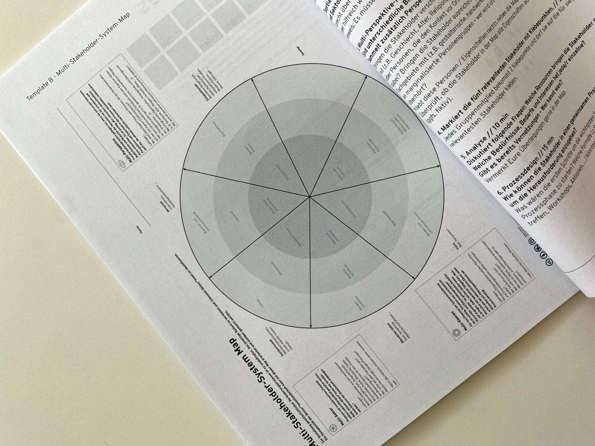

I design, facilitate and lead workshops at the intersection of systems thinking, futures exploration and participatory design. I combine structured facilitation with hands-on, experimental methods that make complex topics tangible through making, mapping and storytelling.
Futures thinking & prototyping: Futurium Lab, Berlin
Participatory formats that explore possible futures through hands-on making, experimentation and critical dialogue, centred on the question: how do we want to live in the future?
- Future-scenario planning and futures-literacy workshops
- Design challenges on sustainability and emerging technologies
- Collaborative prototyping for schools, families and mixed publics
- Open-lab, drop-in, play- and challenge-based learning formats
Maker education & creative technology: Junge Tüftler, Berlin
Workshops that use making as the main way to explore technology, creativity and social change, helping participants engage confidently with topics like AI, climate action and smart cities.
- Maker-education workshops (“learning by doing”)
- Coding, physical-computing and robotics workshops across age groups
- Co-creative design challenges on global, future-oriented topics
- Mission- and storytelling-based learning challenges

Multi-stakeholder mapping: Social Design Lab
During my master’s at HTW Berlin, I designed and facilitated systems-mapping workshops with the Social Design Lab (Hans Sauer Foundation), making complex societal challenges visible, discussable and changeable.
- Multi-stakeholder and actor-network mapping
- Problem framing and synthesis in complex environments
- Large-scale, wall-based diagrams and group sensemaking
- Identifying feedback loops, dependencies and leverage points

Systemic design & futures facilitation: re:flab
An intensive workshop with Madeleine Schwinge (re:flab) on systemic thinking, complexity and future-oriented facilitation. Building on it, I developed my own workshop format that turns systems mapping, reframing and collective reflection into a springboard for alternative future scenarios and strategic intervention points.
What I bring to a workshop
- Making complexity tangible through mapping, making and prototyping.
- Navigating uncertainty by exploring alternative futures in a structured way.
- Co-creative sensemaking in participatory, multi-stakeholder processes.
- Bridging disciplines between systems thinking, design and hands-on experimentation.